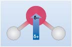
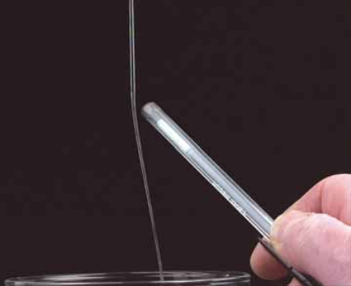

3.2 Electronegativity and the chemical bond
Let’s go back and think a little more about sodium chloride.
Figure 4, in Section 3.1 confirms that chlorine is much more electronegative than sodium.
Because of this large difference in electronegativity, the electron pair (x●) spends all of its time on chlorine, the charges on sodium and chlorine are +1 and -1 respectively, and NaCl is ionic.
In Cl2, by contrast, the electronegativity difference between the bound elements is zero; the shared electrons spend equal times on each chlorine atom, both chlorines are uncharged, the substance is molecular and held together by covalent bonding.
Covalently bonded molecular substances such as Cl2, I2 and CO2 are combinations from the right of Figure 4, because, although for these elements the individual electronegativities are large, the electronegativity differences between them are small.
These two cases deal with combinations of elements with very different electronegativities from the left and right of Figure 4 (ionic bonding), and with combinations of elements of high but similar electronegativity from the right (covalent bonding). And throughout the discussion so far it has been implied that compounds are either ionic or covalent – but this is not necessarily the case.
If you consider the water molecule (H2O), this consists of two H-O bonds, these may be described as covalent with both atoms contributing one electron to the bond. However, because oxygen is more electronegative than hydrogen, the two electrons in the bond are more likely to be found closer to the oxygen. This unequal distribution of electrons results in what is known as a polar covalent bond; the bonding electrons are skewed towards the oxygen and as a result, in water, oxygen will have a partial negative charge (often represented as dδ-), and hydrogen a partial positive charge (dδ+).
Taking the water molecule as a whole, and noting it has V shape (for reasons which will become clear later in this course), the polar nature of water may be represented by Figure 5.

The existence of polar bonds is crucial to the unique properties of water – this will not be discussed in detail here, however take a look at the following visual evidence, which you may wish to try for yourself.
If a plastic pen is rubbed vigorously with a woollen cloth, and held next to a slow, steady stream of water the water is deflected towards it (Figure 6). Suggest why.

- The pen becomes electrostatically charged on rubbing, and attracts the oppositely charged end of the water molecules.
This example is simply an illustration of a more general point.
In practice the type of bonding observed depends on the difference in electronegativity between the atoms involved. If the disparity is small then bonds may be described as covalent. As the electronegativity difference increases there is a gradual change through polar covalent, to fully ionic bonding.
Up to this point, the combination of elements of low but similar electronegativity from the left of the periodic table has not been considered.
What might you expect?
The reasoning pursued until now suggests that, in this case, electronegativity differences between atoms will be small, shared electron-pair bonds and covalent substances, possibly of the molecular type are likely.
Actually this isn’t the case as you’ll see next.
OpenLearn - Discovering chemistry
 Except for third party materials and otherwise, this content is made available under a Creative Commons Attribution-NonCommercial-ShareAlike 4.0 Licence, full copyright detail can be found in the acknowledgements section. Please see full copyright statement for details.
Except for third party materials and otherwise, this content is made available under a Creative Commons Attribution-NonCommercial-ShareAlike 4.0 Licence, full copyright detail can be found in the acknowledgements section. Please see full copyright statement for details.